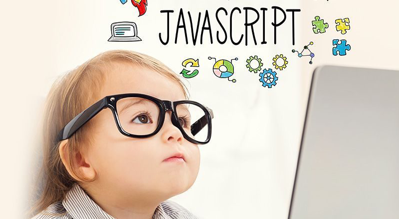

About me
My name is Bimei Li. I am an aspiring web developer and designer currently studying Multimedia Programming and Design at the Borough of Manhattan Community College. I live in Brooklyn, NY. I am fluent in Cantonese & Mandarin. Code, to me, is like composing a symphony of logic. I adore the elegance of well-structured algorithms and the way they dance together to create functionality. Writing code allows me to be creative and communitive. Design is where aesthetics meet functionality. I admire how a well-designed interface can evoke emotions, guide users, and tell a story.
My Skills